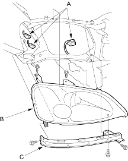
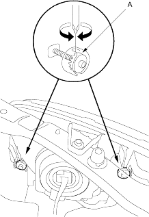

- Remove the front bumper (see page 20-104).
- Disconnect the connectors (A) from the headlight (B).
Headlight: 60/55 W
Front Position Light: 5 W
Front Turn Signal Light: 21 W (Except KK model)
Front Turn Signal/Side Marker Light:
21/5 W (KK model)

- Remove the 5 mounting bolts, then remove the corner upper beam (C) and headlight assembly.
- Install in the reverse order of removal.
- After replacement, adjust the headlights to local requirements.
|
Headlights become very hot in use; do not touch them or any attaching hardware immediately after they have been turned off. |
 CAUTION
CAUTIONBefore adjusting the headlights:
- Park the vehicle on a level surface.
- Make sure the tire pressures are correct.
- The driver or someone who weights the same should sit in the driver's seat.
Adjust the headlights to local requirements by turning the adjusters (A).
